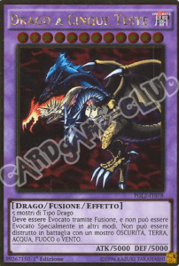
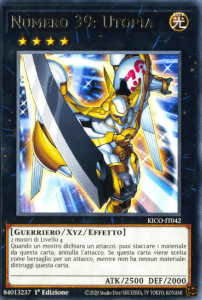
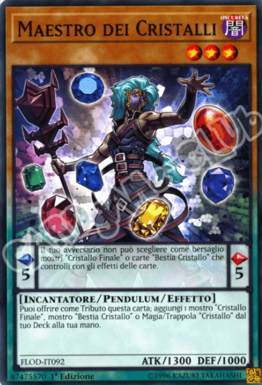

APPROFONDIMENTO EXTRA DECK
Nell’extra deck sono presenti tipi di mostro molto potenti. Questi mostri sono: mostri fusione, mostri synchro, mostri xyz, mostri link. Nelle sezioni successive verranno illustrati i procedimenti per l’evocazione di ogni tipologia di mostro e le loro caratteristiche principali.
Se non hai ancora approfondito il Main Deck clicca qui per saperne di piùMostri Fusione
Le carte fusione sono di colore viola e solitamente sono mostri con punti di attacco molto alti o con effetti molto potenti. Per essere evocati richiedono mostri specifici indicati sulla carta fusione. Questi mostri vengono chiamati materiali da fusione. Quando possiedi tutti i materiali richiesti e una carta magia o trappola che ti permette di effettuare l’evocazione (per esempio “polimerizzazione”) applica l’effetto della carta evocazione mandando i materiali da fusione dove indicato ed evoca specialmente il tuo mostro fusione nella zona mostro extra o in una zona mostro normale.
Mostri xyz
I mostri xyz sono mostri che non necessitano nemmeno della presenza di un mostro tuner per essere evocati. Inoltre i materiali usati non vengono mandati al cimitero ma rimango “sovrapposti” ed attaccati al mostro xyz che li sfrutterà per attivare il suo effetto. Nella descrizione dell’effetto c’è scritto quanti mostri e di che livello devono essere per poter evocare specialmente il mostro xyz (solitamente per un xyz di rango 4 vengono richiesti due mostri di livello 4). I mostri xyz non hanno un livello ma un rango, perciò non possono essere usati per evocazioni synchro o per altre evocazioni xyz salvo specifica indicazione di qualche effetto.
Mostri Synchro
Le carte synchro sono di colore argento e sono facilmente evocabili in quanto non richiedono una carta evocazione come le fusioni. Per effettuare una evocazione synchro sarà necessario un mostro tuner (viene indicato di fianco al tipo del mostro) e altri mostri non tuner in modo tale da ottenere il livello del mostro synchro sommando i valori dei mostri usati come materiale (poi andranno scartati al cimitero). Usando un esempio pratico, se desideri evocare un mostro synchro di livello 8 dovrai avere sul terreno dei mostri la cui somma dei livelli sia esattamente 8 tra cui un mostro tuner (non più di uno).
Mostri Link
I mostri link sono carte particolari che ti permetteranno di sfruttare al massimo eventuali carte pendulum nel tuo mazzo. Per essere evocate necessitano di un numero di materiali pari alla classificazione link (può essere link-1, link-2, link-3, link-4) che verranno mandati al cimitero rendendo possibile l’evocazione speciale del mostro link in una zona mostro extra, oppure in una zona mostro normale che è puntata da una freccia link di un altro mostro. Più la classificazione link è alta, più mostri serviranno come materiale e più frecce link avrà il mostro, permettendoti di applicare i suoi effetti in più zone del terreno. Inoltre, i mostri link possono essere usati a loro volta per effettuare evocazioni link e contano come più materiali in base alla loro classificazione link. Ad esempio un link-2 insieme ad un altro mostro può essere usato per evocare specialmente un mostro link-3. Negli effetti delle carte link si possono trovare le diciture “linkato” e “co-linkato”. Linkato significa che un mostro è in una zona puntata da una freccia link mentre co-linkato indica due mostri link che hanno delle frecce link che sono reciprocamente puntate.
Carte Pendulum
Le carte pendulum sono carte a metà tra carte mostro e carte magia. Infatti possono essere usate sia come carte magia con l’effetto presente subito sotto il disegno del mostro, oppure come carte mostro utilizzando il secondo effetto e le statistiche attacco e difesa. I pendulum hanno un'altra caratteristica chiamata valore pendulum. Il valore pendulum è un numero compreso tra 1 e 8 riportato di fianco al primo effetto della carta. Se nel tuo terreno sono presenti due carte pendulum nelle apposite zone pendulum (le carte in questione sono utilizzate come magie) puoi effettuare delle evocazioni pendulum. Durante queste evocazioni puoi evocare dalla tua mano quanti mostri vuoi purché il loro livello sia compreso tra i valori pendulum delle carte nelle apposite zone. Durante queste evocazioni puoi anche evocare specialmente dal tuo extra deck eventuali mostri pendulum purché essi vengano posizionati in una zona puntata da un mostro link. I mostri pendulum quando vengono distrutti vanno posizionati scoperti sul tuo extra deck.
Le Catene
Introducendo la possibilità di agire nel turno degli altri avversari con trappole, magie rapide ed effetti rapidi, le regole si complicano e vengono introdotte le catene. Le catene sono il modo di ordinare la risoluzione di più effetti di queste carte. Come funziona? Quando un giocatore attiva una carta, l'avversario ha la possibilità di rispondere attivando un'altra carta prima che l'effetto dell'altro giocatore si svolga. In questo modo si apre una catena e si possono continuare ad aggiungere effetti alla catena (detti anelli) fino a quando entrambi i giocatori non voglio più aggiungere anelli. Quando la catena è conclusa gli effetti si risolvono in senso inverso, quindi dal più recente fino a quello che ha fatto iniziare la catena. Inoltre un giocatore può rispondere all'effetto di una sua stessa carta, creando da solo una catena, ma a condizione che l'avvesario non voglia giocare una carta, perchè in tal caso ha lui la priorità.
SPELL SPEED
un fattore molto importante delle catene è la spell speed, esistono tre livelli di spell speed:
- livello 1: carte magia (normali, continue, equipaggiamento e terreno), effetti mostro (ignizione, innescati, scoperta)
- livello 2: trappole (normali e continue), carte magie rapide, effetti rapidi di mostri
- livello 3: controtrappole
un giocatore può aggiungere un anello alla catena solo se gioca una carta con spell speed 2 o 3 e la carta che vuole attivare deve essere di livello uguale o maggiore all'ultima carta attivata nella catena. Le carte con spell speed 1 quindi, possono solo dare origine a una catena, ma non possono essere aggiunte ad essa in seguito.
Un caso particolare:
Ipotiziamo che un giocatore attacchi un mostro avversario e l'altro giocatore risponda con cilindro magico, qui si apre una catena. Il primo giocatore decide di aggiungere un anello alla catena attivando tifone spaziale mistico distruggendo il cilindro magico. Questo però non basta a rimuovere l'anello della catena. La carta è distrutta, ma l'effetto si applica lo stesso.
Ora sei pronto per scoprire la pagina degli esempi!